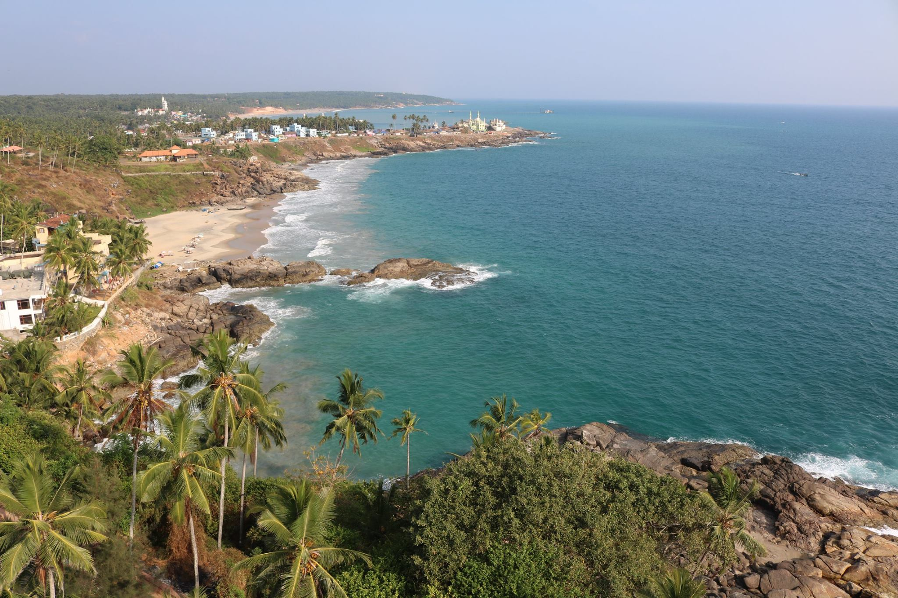
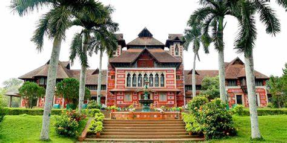

Thiruvananthapuram
Padmanabhaswamy Temple

The City of Lord Ananta"
Trivandrum Tourism
The capital city of Kerala, Thiruvananthapuram or Trivandrum, is an appealing blend of a strongly rooted heritage and a nostalgic colonial legacy. Built upon seven hills, this city has long since left the days when it was only used by seafaring explorers behind - today, Trivandrum is an expensive metropolis with quaint urban charm and plenty of architectural and historical places to visit. In addition, Trivandrum is a gateway to nearby popular beach towns of Kovalam and Varkala.
The Padmanabhaswamy temple (also known as Anantha Padmanabhaswamy temple) is a must-visit temple of India. Other famous temples in Trivandrum include the Attukal Bhagawati temple, the Aazhimala Siva Temple, the Karikkakom Chamundi Devi Temple, and the Pazhavangadi Ganapathy Temple.
The city is home to a few museums, such as the Kuthiramalika Palace Museum and the Napier Museum. The Kuthiramalika Palace Museum is situated close-by to the Padmanabhaswamy temple. Renowned for its Travancore styled architectural features and its structural elegance, this museum houses priceless paintings, traditional furniture, and other royal family collections.
kovalam Beach

Kovalam
Kovalam - breathtakingly beautiful - a haven of peace and tranquility - the idyllic tourist destination in God's own country. Kovalam offers an excellent diversity with Kovalam beach to suit all desires and occasions. Three curve shaped beaches, alienated by stony outcroppings, from the major attraction of this coastal resort.Backed by precipitously mounting headlands and covered by fertile coconut palms, the beaches, especially the southern most part of lighthouse beach. It is also lined with a host of shops and shacks offering all kinds of services; creating an unmistakable resort atmosphere.Curio shops, hawkers of Kashmiri and Tibetan products, moneychangers and beachwear shops, between the surplus of restaurants and hotels, do brisk business during peak tourist season.The romantic and natural ambience of this beach not only adds spirit and lustre, but also makes the journey of life fascinating and memorable.Honeymoon couples and beach lovers extremely love this beach as it offers romantic moments all along with plenty of activities for adventure and fun. You can feel the pleasure of boat sail with your loved ones and discover the popular sights all around the beach. So, come here and rejuvenate yourself and feel refreshed once again.
Napier Museum

Kovalam
n the heart of Thiruvananthapuram city lies the great Napier Museum and the Natural History Museum in the Museum compound, close to the Zoological park. Built in the 19th century, it has its own natural air-conditioning system. It contains a host of historical artefacts including bronze idols, ancient ornaments, a temple chariot and ivory carvings. People are especially impressed by the Japanese shadow-play leather that is used to depict the epics of the Mahabharata and Ramayana.
Kerala's rich cultural heritage is in full display here. The museum was named after the former Madras Governor General, John Napier. Also known as Government Art Museum, the architectural style of museum is a mix of Indian, Chinese, Kerala and Mughal Schools of Architecture.